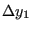
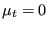

An external edge i with length d and h-value at its nodes of  and  is divided into n(i)+1 edges satisfying:
where int(x) is the integer smaller than or equal to the real number x. This creates at most 2 edges out of 1.